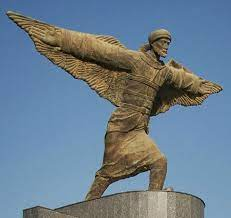

Abbas Kasım İbn Firnas (d. 810, Ronda - 888, Kurtuba), Berberî astronom, simyacı, fizikçi, şair ve İslam bilginidir. Tarihî kaynaklar Endülüslü Firnas'ın da uzun çalışmalar sonunda yeni bir keşifte bulunup bir cihaz yaptığını, üzerine kumaş geçirip kanat yerine büyük kuş kanatları taktığını ve bu âleti çalıştırarak havalanıp uçtuğunu kaydeder. Üstelik havada uzun süre kuşlar gibi süzüldüğünü, daha sonra da yavaşça yere indiğini söyler. İbn-i Firnas'ın bu başarısı modern uçağın babası sayılan Wright Kardeşler'den 1023 yıl öncesine rastlamaktadır.
Abbas ibn Firnâs
| Abbas ibn Firnâs | |
|---|---|
|  | |
| Doğum | 810 Ronda, Kurtuba Emirliği |
| Ölüm | 888 (77-78 yaşlarında) Kurtuba, Kurtuba Emirliği |
| Milliyet | Berberi |
| Vatandaşlık | Endülüs Emevî Devleti |
| Dalı | Gökbilim, Simya, Fizik |
Diğer çalışmaları
İbn Firnas'da birçok alanda çalıştı, kimya, fizik, astronomi okudu.
Astronomi tabloları hazırladı, şiir yazdı, el-Makata adlı saati
tasarladı.
Kaya kristallerini kesme yöntemini geliştirdi. O zamana kadar sadece
Mısırlılar kristal kesmeyi biliyordu. Bundan sonra, İspanya
Mısır'dan kuartz ithalini bıraktı.
Güneş ve gezegenleri hareket halinde gösteren bir Plenatarium da
yapmıştı. Bilgin bu cihazla yıldızlarla birlikte bulutu ve
şimşekleri de inceliyordu.
Ünlü bilgin ayrıca kendisine has metotlarla bir kısım taşlardan
mükemmel cam imal etme usûlünü keşfetmiş, cam sanayinin de öncüsü
olmuştu.
Ayrıca düzeltme kabiliyeti olan camı keşfederek gözlüğün mucidi
olduğu kabul edilir.
Bilgin İbn-i Firnas'ın aynı zamanda İslâm musıkîsinin İspanya'da
topluma mal edilmesini sağlamıştır.
Libya'da onun onuruna posta pulu basıldı. Irak'ta Bağdat
Uluslararası Havaalanı'nda onun anısına bir heykel dikildi.
Bağdat'ın kuzeyinde İbn Firnas Havaalanı'na onun adı verildi. Ay
üzerinde güneybatıda King ve Ostwald Kraterlerine yakın bir yerde 89
km çapındaki bir kraterin adı İbn Firnas diye isimlendirildi.
Görüşler
Philip Khuri Hitti, 'Arap Tarihi' adlı eserinde şöyle der: 'İbn
Firnas, insanlık tarihinde ilk defa bilimsel uçma girişiminde
bulunan kişidir.'
Alman bilim tarihi araştırıcısı Sigrid Hunke, 'İbn- i Firnas'ın
yaptığı bu uçakla İkaros'un rüyasını gerçekleştirdiğini' dile
getirmektedir.
Osman Turan da İbn-i Firnas'ın 'İslâm medeniyetinde modern
havacılığın öncüsü' olduğunu dile getirdikten sonra şöyle bir
tespiti de ilave etmektedir: 'Daha doğrusu şu dünya tarihinde ilk
defa uçmayı gerçekleştiren, uçak yapan bir Müslümandır.'